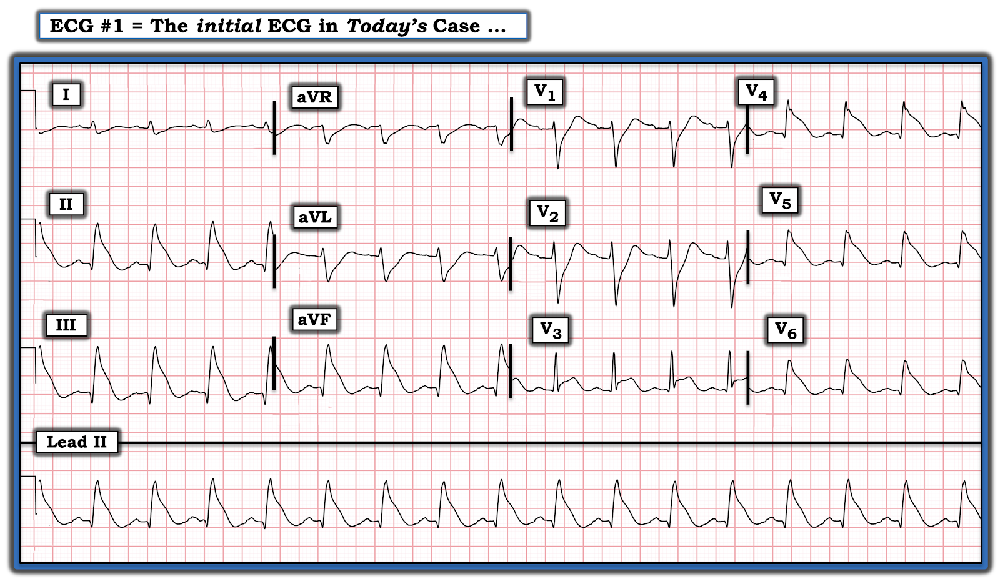
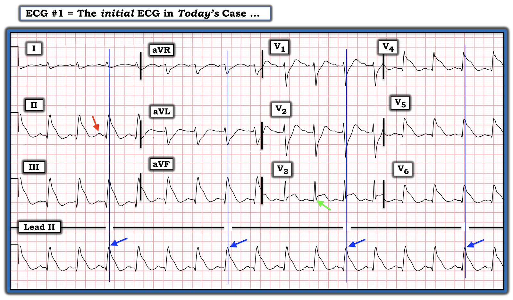
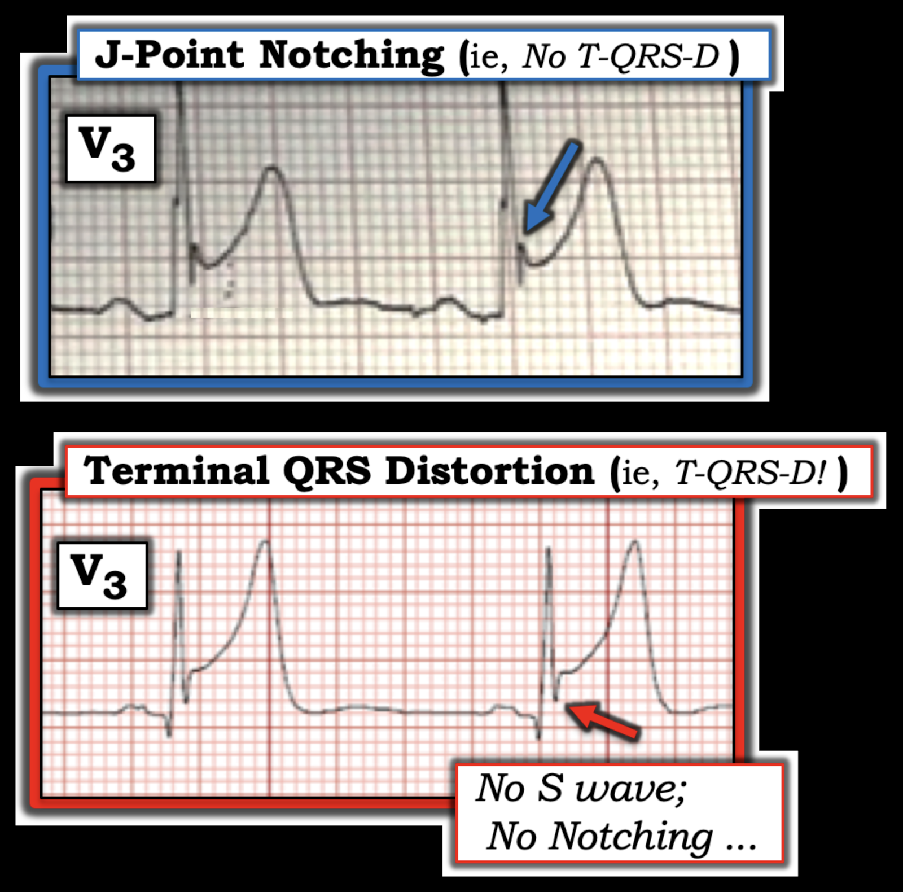
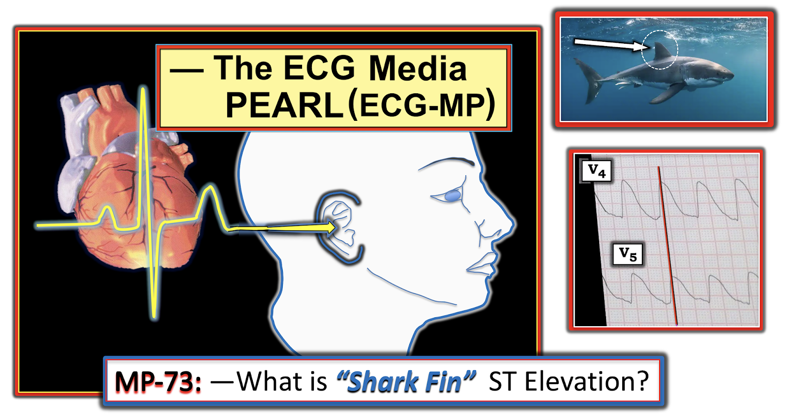

ECG Blog #353 — Vì sao QRS rộng? - T-QRS-D
Điện tâm đồ ở Hình-1 thể hiện một hình ảnh mà bạn cần nhận ra — vì vậy, KHÔNG cung cấp bệnh sử. BẠN sẽ đọc bản ghi này như thế nào?


SUY NGHĨ CỦA TÔI về điện tâm đồ ở Hình-1:
Thoạt nhìn — nhịp ở Hình-1 trông giống một nhịp QRS rộng. Nhưng QRS không rộng. Thay vào đó, nhịp nền là nhịp xoang, thể hiện qua sóng P xoang dương ở chuyển đạo II (mũi tên ĐỎ ở Hình-2).
- Điểm cần dạy nằm ở việc đánh giá thời gian QRS. Lý do QRS trông rộng — là vì nó "hòa lẫn" với các đoạn ST kế cận, vốn chênh lên hoặc chênh xuống rất rõ. Hậu quả là — ranh giới giữa điểm kết thúc của phức bộ QRS và điểm bắt đầu của đoạn ST trở nên không thể phân biệt ở nhiều phần của bản ghi này.
- Đây là hình thái "vây cá mập" (shark fin) — thường gặp nhất là biểu hiện của thiếu máu cục bộ xuyên thành nặng do OMI cấp = Occlusion-based Myocardial Infarction — nhồi máu cơ tim do tắc (Xem ECG Blog #265 và ECG Blog #296 — để có thêm ví dụ về hiện tượng này).
Để xác nhận hình thái vây cá mập:
MẤU CHỐT để xác nhận sự hiện diện của hình thái vây cá mập — là tìm 1 hoặc 2 chuyển đạo mà ở đó bạn có thể xác định rõ giới hạn (điểm kết thúc) của một phức bộ QRS.
- Chuyển đạo hữu ích nhất để làm việc này trong ca hôm nay là chuyển đạo I — ở đó tôi đã vẽ một đường XANH DƯƠNG song song với đường kẻ đậm của lưới điện tâm đồ ở các chuyển đạo I,II,III được ghi đồng thời. Lưu ý rằng tôi đã kéo dài đường này xuống tới phức bộ tương ứng trên dải nhịp chuyển đạo II dài (Hình-2).
- Lý do tiếp tục kéo đường XANH DƯƠNG xuống tận nhát bóp tương ứng trên dải nhịp chuyển đạo II dài — là vì điều này cho bạn biết phức bộ QRS kết thúc và đoạn ST bắt đầu ở đâu trên dải nhịp chuyển đạo II dài (tức là, các mũi tên xanh dương trên dải nhịp chuyển đạo II dài đánh dấu điểm kết thúc của phức bộ QRS).
- Biết được mốc này của các phức bộ trên dải nhịp chuyển đạo II dài — cho phép chúng ta vẽ và kéo dài lên trên các đường XANH DƯƠNG song song với đường kẻ đậm của lưới điện tâm đồ ở 3 nhóm chuyển đạo được ghi đồng thời còn lại.
Tổng Hợp Lại Tất cả:
Điện tâm đồ ở Hình-2 cho thấy nhịp xoang tần số ~95/phút, với mức lệch đoạn ST kiểu "vây cá mập" cực lớn ở nhiều chuyển đạo:
- Ở 3 chuyển đạo thành dưới (II,III,aVF) — có sóng Q kèm ST chênh lên rất rõ (thấy ở bên phải các đường XANH DƯƠNG trên Hình-2).
- Có mức ST chênh xuống soi gương (reciprocal) tương đương ở chuyển đạo aVL (với mức ST chênh xuống ít hơn ở chuyển đạo I, nơi phức bộ QRS nhỏ hơn nhiều).
- Ở các chuyển đạo trước ngực — ST chênh lên bắt đầu từ chuyển đạo V3, và tiếp tục với hình thái vây cá mập ở các chuyển đạo V4,V5,V6. Thấy sóng Q nhỏ nhưng-chắc-chắn-có ở mỗi chuyển đạo này.
- Sóng dương đầu tiên (sóng r) vẫn được bảo tồn ở các chuyển đạo V1,V2. Thấy ST chênh xuống hình thái vây cá mập ở 2 chuyển đạo trước này.
- ĐIỀU CỐT LÕI: Ở một bệnh nhân mới đau ngực — điện tâm đồ trong Hình-2 cho phép chẩn đoán một biến cố cấp lan tỏa, đang diễn ra. NẾU do một mạch "thủ phạm" duy nhất — tôi sẽ nghĩ đến tắc cấp một động mạch vành LCx (động mạch mũ trái — Left Circumflex) ưu thế, xét theo tổn thương vùng dưới-sau-bên. Khả năng cao hơn — bệnh nhân này có bệnh nhiều mạch nền nặng, kèm tắc cấp một trong những nguồn cấp máu vành còn lại.


CÂU HỎI:
- BẠN có nhận thấy T-QRS-D ở chuyển đạo V3 của Hình-2 không?
===============================
T-QRS-D: Một dấu hiệu điện tâm đồ chưa được đánh giá đúng mức:
Khái niệm Terminal QRS Distortion (T-QRS-D) — biến dạng phần cuối QRS — từng hoàn toàn xa lạ với tôi trước khi tôi tích cực tham gia với vai trò Phó Tổng biên tập (Associate Editor) của Dr. Smith's ECG Blog. Từ đó đến nay tôi đã gặp nhiều ca bệnh xác nhận giá trị lâm sàng của dấu hiệu điện tâm đồ này, vốn được BS Stephen Smith cổ vũ. Khi có mặt — T-QRS-D có thể hỗ trợ vô giá trong việc phân biệt giữa biến thể tái cực (repolarization variant) với OMI cấp (tức là, Khi có T-QRS-D thực sự ở một bệnh nhân có triệu chứng mới — dấu hiệu này gần như chẩn đoán OMI cấp). Tôi minh họa dấu hiệu điện tâm đồ T-QRS-D ở Hình-3 bên dưới, được tôi trích từ Bình luận của tôi trong bài đăng ngày 14 tháng 11 năm 2019 trên Dr. Smith's ECG Blog. Xin ôn lại:
- T-QRS-D — được định nghĩa là không có cả sóng J lẫn sóng S ở một trong hai chuyển đạo V2 hoặc chuyển đạo V3. Dù định nghĩa đơn giản — dấu hiệu này có thể rất tinh tế! Tôi hoàn toàn thừa nhận rằng tôi đã phải mất một thời gian mới cảm thấy thoải mái và tự tin khi nhận ra nó.
Một hình ảnh đáng giá 1.000 lời. Tôi đã lấy các ví dụ về chuyển đạo V3 trong Hình-3 từ các ca trước đây đã đăng trên Dr. Smith’s ECG Blog:
- PHÍA TRÊN ở Hình-3 — Dù ST chênh lên rõ ở chuyển đạo V3 này — đây không phải T-QRS-D, vì có khía ở điểm J (mũi tên XANH DƯƠNG) rõ nét. Bệnh nhân này có biến thể tái cực là nguyên nhân gây ST chênh lên.
- PHÍA DƯỚI ở Hình-3 — Đây là T-QRS-D, vì ở chuyển đạo V3 này không có khía ở điểm J — và, không có sóng S (mũi tên ĐỎ cho thấy sóng cuối cùng của QRS không bao giờ xuống dưới đường nền).
Về Ca Hôm nay:
Rõ ràng — Chúng ta không cần xác định T-QRS-D trong ca hôm nay để khẳng định OMI cấp diện rộng. Dù vậy — tôi thấy hữu ích khi nhận ra rằng T-QRS-D có mặt ở chuyển đạo V3 (mũi tên XANH LÁ ở Hình-2) vì: i) Chuyển đạo này không có sóng J; và, ii) Không có sóng S (vì sóng cuối cùng của QRS ở chuyển đạo V3 trong bản ghi hôm nay không bao giờ xuống dưới đường nền)!


DIỄN TIẾN của CA HÔM NAY:
Thông tin diễn tiến của ca hôm nay còn hạn chế. Điện tâm đồ hôm nay là của một người đàn ông 57 tuổi đến khám vì đau ngực. Thông tim cho thấy bệnh nhiều mạch nặng — gồm tắc đoạn gần RCA và LAD, kèm bệnh lan tỏa LCx.
- Phải thừa nhận việc dự đoán giải phẫu mạch vành của bệnh nhân này chỉ mang tính học thuật — vì thông tim sớm kèm tái tưới máu cấp đều sẽ được chỉ định bất kể dự đoán của chúng ta là gì.
- Dù vậy — lý do tôi nghi rằng tổn thương "thủ phạm" sẽ không chỉ là tắc cấp đoạn gần LAD (động mạch liên thất trước — Left Anterior Descending) — là do không có ST chênh lên ở các chuyển đạo phía trước hơn (tức là, ở các chuyển đạo V1,V2).
- Đúng là tắc LAD (còn gọi là tổn thương "vòng qua mỏm" (wraparound)) có thể gây ST chênh lên ở cả vùng chuyển đạo dưới và vùng chuyển đạo trước — nhưng chúng ta sẽ không dự kiến mức ST chênh lên cực lớn như thế này ở các chuyển đạo dưới nếu tổn thương duy nhất là một LAD "vòng qua mỏm".
- Tắc LCx ưu thế có thể tạo ra kiểu phân bố thay đổi sóng ST-T cấp như thấy trên điện tâm đồ hôm nay. Dù vậy — một "Điều cần nhớ" mà bạn nên lưu tâm, là bệnh nhiều mạch nền nặng là bối cảnh thường gặp của những vùng tổn thương cấp rộng dường như không phù hợp với những gì bạn dự đoán từ tắc cấp một mạch đơn lẻ.
==============================
LỜI CẢM ƠN: Xin cảm ơn Chun-Hung Chen (đến từ thành phố Đài Trung, Đài Loan) đã cung cấp ca bệnh và bản ghi này.
==================================
PHẦN BỔ SUNG (28/12/2022):
- Để ôn lại khái niệm lệch ST vây cá mập ...


TECG Media PEARL #73 (5:40 phút Audio) — Ôn lại khái niệm ST chênh lên và chênh xuống kiểu "vây cá mập" như một dấu hiệu của nhồi máu cấp diện rộng.
==================================
Các bài ECG Blog liên quan đến ca hôm nay:
- ECG Blog #205 — Ôn lại Cách tiếp cận hệ thống của tôi trong đọc điện tâm đồ 12 chuyển đạo.
- ECG Blog #265 — và ECG Blog #296 — để xem các ví dụ về lệch ST vây cá mập.
- Bài đăng ngày 22 tháng 11 năm 2019 trên Dr. Smith's ECG Blog — Bình luận của tôi (ở cuối trang) bổ sung cho ca này, trong đó có ngừng tim, sóng Osborn do thiếu máu cục bộ, kèm lệch ST vây cá mập rất lớn do STEMI cấp.
- Bài đăng ngày 12 tháng 6 năm 2018 trên Dr. Smith's ECG Blog — Bình luận của tôi (ở cuối trang) bổ sung cho ca này, trong đó có Blốc hai phân nhánh nền (RBBB/LPHB), bên cạnh ST chênh lên & chênh xuống kiểu vây cá mập.
- Bài đăng ngày 24 tháng 1 năm 2020 trên Dr. Smith's ECG Blog — Bình luận của tôi (ở cuối trang) bổ sung cho ca này, trong đó có Blốc hai phân nhánh nền (RBBB/LPHB) bên cạnh ST chênh lên & chênh xuống kiểu vây cá mập — sau đó là điện thế thấp tiến triển do cơ tim choáng váng (myocardial stunning) từ ổ nhồi máu rất lớn.
- ECG Blog #318 — Ôn lại khái niệm T-QRS-D (Terminal-QRS-Distortion — biến dạng phần cuối QRS) — như một dấu hiệu của OMI cấp.